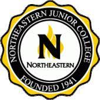
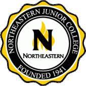

Education
Colorado State University
Bachelors of Science, Chemistry (2017)
American Chemical Society Certified
Northeastern Junior College
Associates of Science (2015)
 

Work Experience
Prieto Battery
Laboratory Technician
Jul. 2023-Present
- Facilitate the production and improve the performance of fast-charging, safe, and sustainable three-dimensional battery cells.
- Maintains safe storage of hazardous waste (accurate container labels, separating noncompatible chemicals, and ensuring adequate secondary containment) and manages interactions with 3rd party vendors for retrieval and disposal.
- Recommend and integrate updates to quality control protocols that measure properties (particle size, viscosity, and sheet resistance) of various cathode slurry formulations and dispersants for spray deposition onto anode cells.
- Reviews primary literature to ascertain and actualize process improvements for manufacturing in preparation for scaled-up production of the novel batter technology.
- Authors weekly reports (Word documents and PowerPoints) to communicate work completed, identifying next steps to keep internal and external stakeholders apprised of progress.
- Created and enacted new processes for cross-functional manufacturing teams, leading to a tripling of cell energy density quadrupling of the electric charge.
- Formulated an improved cathode cell slurry that requires less solvent, facilitating substantial reductions in both total deposition times, as well as electronic resistance across the cell, and achieving faster charge times.
Inscripta
Senior Research Associate
Mar. 2022-Sep. 2022
- Developed surface chemistry and lipid nanoparticle synthesis processes to facilitate human cell transfection with gene editing reagents for automated, high-throughput CRISPR platform. Resulted in shelf-stable reagents (lasting six months) produced in consolidated process to support wider efforts of three teams and saving hundreds of man hours. Surface chemistry was de-risked 10 months ahead of schedule.
- Enhanced analytical techniques for lipoplex morphology quality control, as well as to ascertain transfection and editing efficiency improvements.
- Crafted and executed characterization strategies for product and process through capability gap analysis, QC development, QC validation, and QC deployment to wider teams across three sites via training and SOP authorship.
- Utilized fluorescence, flow cytometry, microscopy, DLS, zeta potential, plate reader, Python, image analysis, and mammalian cell culture.
Access Sensor Technologies
Chemist II
Oct. 2021-Feb. 2022
- Managed field sample collection and data analysis and recommended next steps to research lead pollution in soils resulting in the preparation and acceptance of a peer-reviewed journal article (2021).
- Expanded manufacturing practices for a point-of-care disposable ELISA, capillary-driven microfluidic device used in the detection of COVID-19 antigens and antibodies. Efforts produced significant improvements in flow reproducibility, as well as a 90% increase in device coating uniformity.
- Created automated regression models using Microsoft Excel to quantify metal concentrations in aqueous samples from UV-Vis and potentiostat outputs.
- Maintained and calibrated multiple scientific/analytical laboratory instruments: UV-Vis spectrophotometer, pH probes, reagent printers, CO2 laser cutter.
- Managed the storage and disposal of all hazardous waste, curating necessary documentation and facilitating safe laboratory practices.
R&D Chemist
Jan. 2018-Sep. 2021
- Enhanced and expanded manufacturing of On-Target® microfluidic paper analytical device (µPAD) technologies: reagent ink printing, printer modification and assembly, and assay development for the detection of various metals in aqueous samples.
- Directed production of a field kit to characterize heavy metal pollution in soils, coordinating across teams to validate methods and create a prototype. Optimized electrochemical methods for point-of-use detection (cyclic and square wave anodic/cathodic stripping voltammetries) to lower limits of detection and prepare a simple-to-use product.
- Co-authored an accepted proposal for SBIR Phase I NIEHS Superfund grant funding.
- Improved the manufacturing of carbon electrodes to be used by internal teams, reaching a 95% manufacturing throughput success rate.
- Mentored and trained four summer interns on a variety of projects covering heavy metal, biological, and aerosol sampling assays.
Colorado State University
Research Assistant
May 2016-Dec. 2017
- Designed a multi-step organic synthesis reaction to create novel amphiphilic surfactant molecules isotopically labeled with selenium-77 for solid state NMR characterization of water in reverse micelles.
- Determined the structure of novel surfactant molecule via 1H NMR and FT-IR spectroscopies.
- Developed protocols for purifying and drying surfactant molecules.